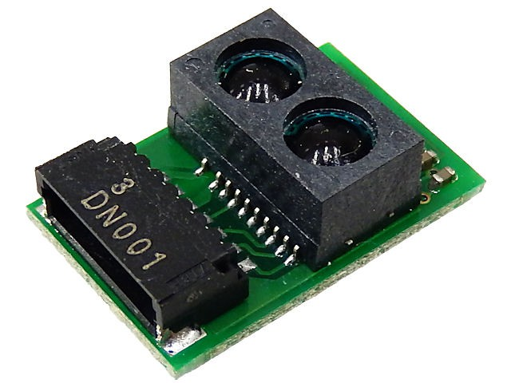

SHARP GP2Y0E03 Distance Sensor¶
Published on 2016-09-09 in Various Micropython Libraries and Drivers.
This is a small infra-red distance sensor with I²C interface. It can measure distances from 4 to 127cm. The source code is available here: https://bitbucket.org/thesheep/micropython-gp2y0e03/src
Example use:
from machine import I2C, Pin
import gp2y0e03
i2c = I2C(Pin(5), Pin(4), freq=100000)
s = gp2y0e03.GP2Y0E03(i2c)
s.read()
\